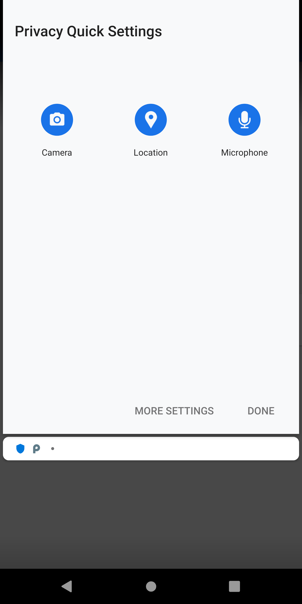

Implemented version of Quick Settings in Policy Manager.
Users may only care about a few very important sources of private information: camera, microphone and location. Instead of configuring these yourself, you may just tap a button instead. Quick settings give users a simple way to disable access to these sensitive data sources, quickly.
Quick settings are enforced with the second most priority, behind privacy profiles.